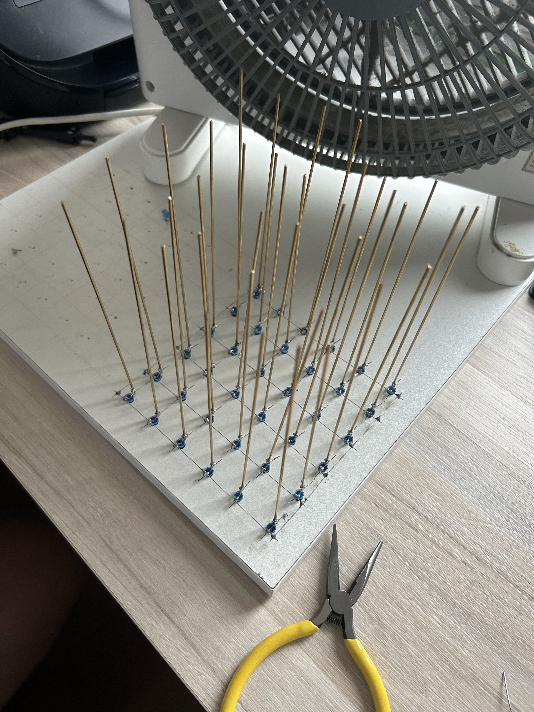
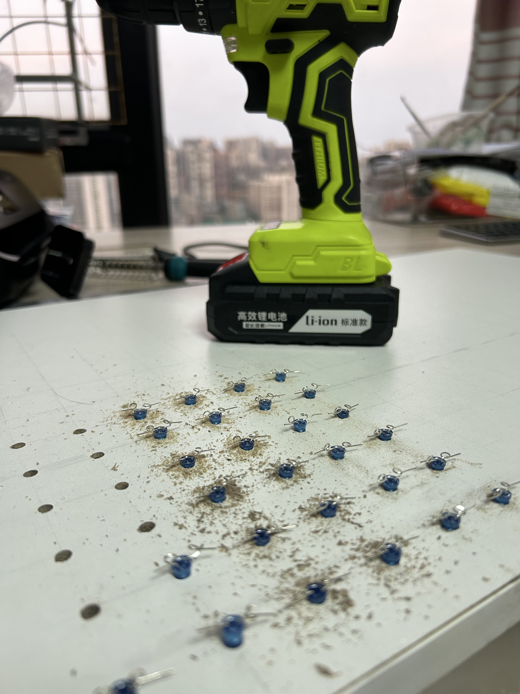
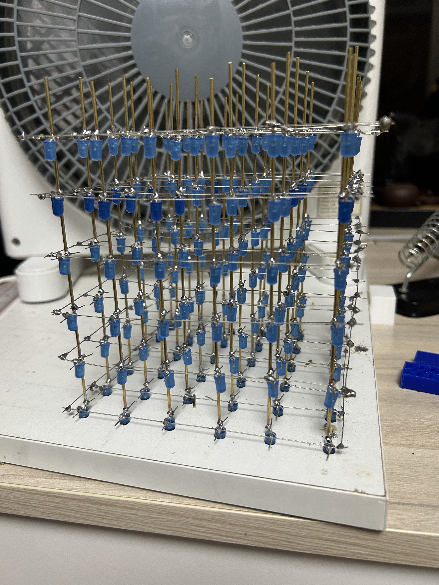
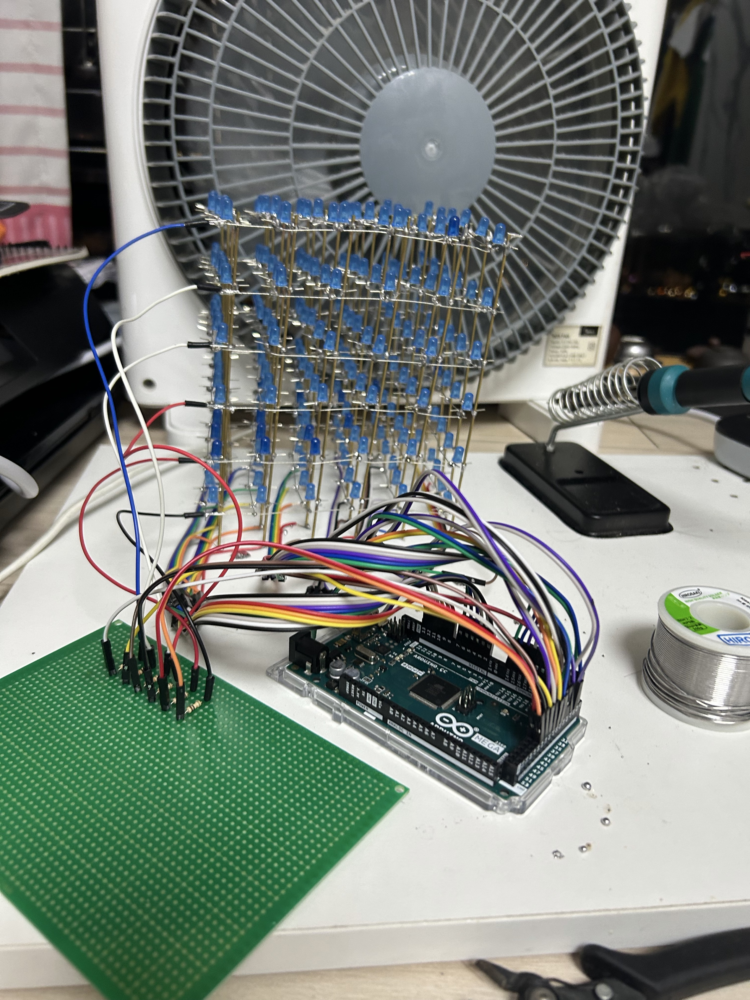
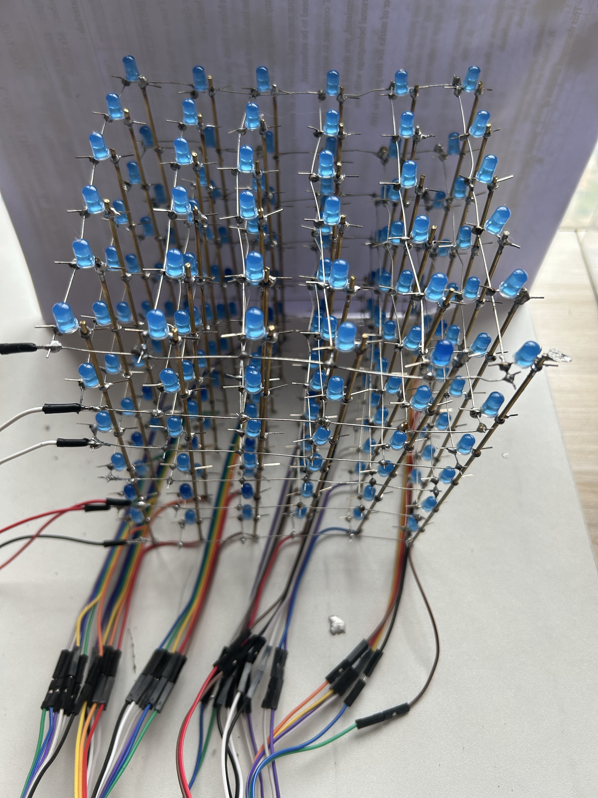
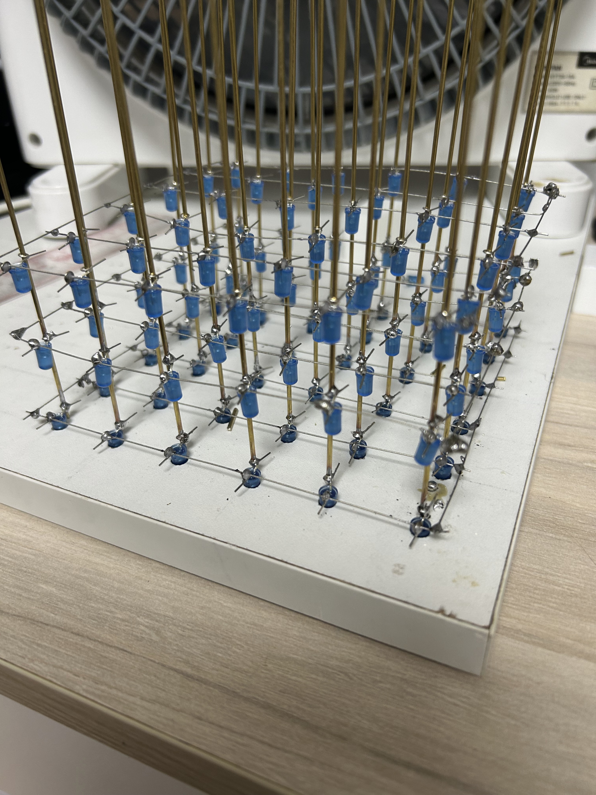

6x6x6
LED
Cube
Objectives
The aim of this project is to understand how individual LEDs can form a three-dimensional display. The cube contains 216 LEDs arranged in six layers, with 36 LEDs in each layer.
I wanted to understand the connections between the LEDs and learn how to control light patterns using X, Y, and Z coordinates. I also wanted to see how changing the timing and brightness could produce different movements.
Making Process
The cube is designed as six identical layers, each containing 36 LEDs in a 6 × 6 grid. Keeping the same spacing within and between the layers gives each LED a consistent X, Y, and Z position. The LED leads connect to horizontal layer wires and vertical column wires, which also help support the structure.

A practical way to assemble the cube is to use a template with 36 equally spaced holes to hold the LEDs while soldering each layer. The LED polarity needs to be consistent throughout the grid. Each layer can be checked before stacking the six layers and connecting the vertical wires. The layer wires and column wires must remain electrically separate except through the LEDs.

Arduino can control this arrangement using layer multiplexing. Instead of providing a separate output for every LED, the circuit uses 36 column connections and six layer connections. The program loads the pattern for one layer, enables that layer briefly, and then moves to the next. Repeating this sequence quickly makes the layers appear to form one continuous display.

The Arduino sends control signals to the driver circuit rather than powering an entire layer directly from its output pins. Shift registers can expand the column outputs, while suitable transistor or MOSFET drivers switch the layers. Current-limiting resistors or constant-current LED drivers are needed, and the power supply and drivers must be chosen for the expected LED current. The Arduino and the driver circuit share a common ground.

In the Arduino program, the LED states can be stored in a three-dimensional array such as cube[z][y][x]. The display routine reads one layer at a time and sends its column data to the drivers. All layers are disabled while changing the column data to reduce unintended flashes. The animation routine updates the array separately, so the display can keep refreshing while the pattern changes.

Each pattern uses the LED coordinates and the current time to decide which positions should be on. A wave changes the height of the active LEDs, while a falling pattern moves the active positions downward. If brightness control is needed, timed pulses can be added to the refresh routine; it is not enough to assign a brightness value without implementing it in the driver timing.
Breaking the cube into one layer at a time makes both assembly and troubleshooting easier to follow. I also find it useful to separate the animation logic from the display routine. This keeps the pattern code easier to understand while the Arduino continues scanning the layers at a steady rate.
Results
The web demonstration shows all 216 LED positions and includes eight animation modes. The model can be rotated and viewed from different angles, and the animation speed, brightness, and color can be adjusted.

I found that a small number of LED positions can show several types of movement. The relationship between the brightness values over time is important to the result. The six-layer grid limits the detail of each pattern, so viewing it from different angles helps show whether the movement is clear.
The demonstration presents the structure and simulated light patterns. It does not measure the electrical performance of a physical circuit.